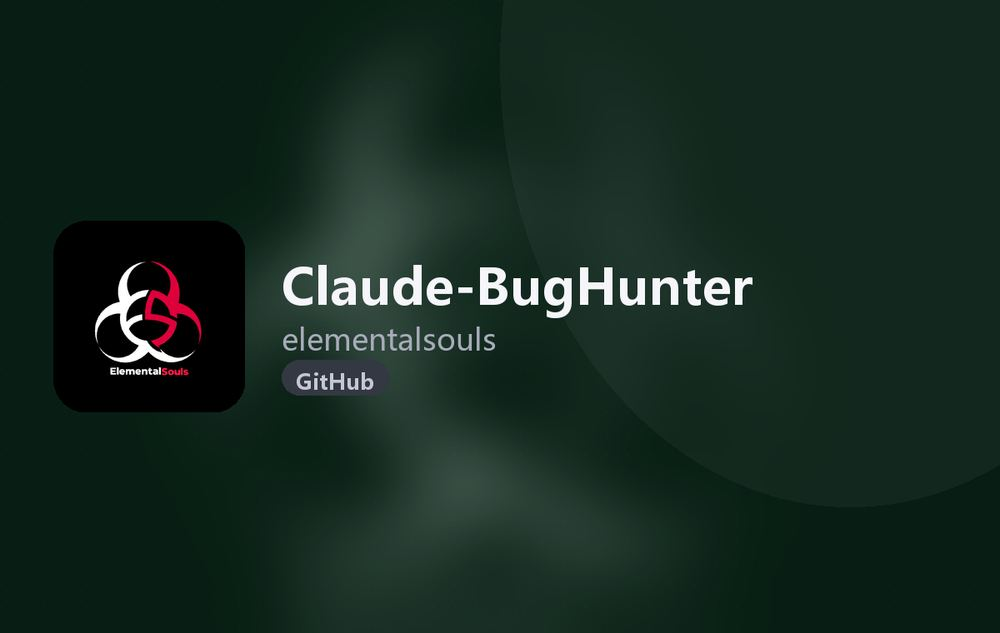

89开源热议 · 901
elementalsouls/Claude-BugHunter： 登顶，82 个黑客技能包
四维 86库龄 201 天（>1 年 −5）已豁免（当日总榜第 1 + 单日 +1803★，双条件）重大更新双条件（+1803★ + 总榜第 1）+3+3= 89
Claude-BugHunter 是面向 Claude Code 的 bug 猎捕与外部红队技能包，含 82 个技能、15 个斜杠命令，以及跨 24 类核心漏洞策划的 681 个已披露报告模式和企业身份/基础设施攻击矩阵。今日新增 1803★（总星 1.6 万），位列当日 Trending 总榜第 1，是全场单日涨星最多的仓库；仓库 2026 年 5 月创建、201 天，今日仍有 push，满足「单日 ≥1000★」与「总榜前 10」双条件，库龄减分豁免并加 3 分。
💡 点评今天的新动静是它一天涨了 1803 星、把一整套漏洞挖掘工作流打包成可直接调用的技能。它登顶说明「把专家经验固化成 Agent 技能包」仍是开源社区最买账的形态；但红队工具的双刃属性也意味着这类星数狂飙需要更谨慎地看使用边界。
GitHub Trending · 原文 →